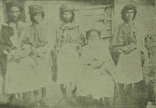
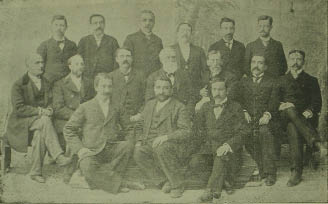

Fotoğraflar
Sultan II. Mahmud Han Hazretleri
Sultan Abdülmecid Han Hazretleri
Hz. Süleyman ve Seba Melikesi Belkıs’ın görüşmesi
Şeyh Nasır Paşa
Şeyh Kanes ve Vasıl’deki evi
Abdullah Mansur’un kuşları
Beyt-i Müddei civarını gösteren kroki.
Mr. Waymanburry veyahut misyoner Abdullah Mansur
Abdullah Mansur’un hizmetçisi Muhammed Ali

Fethiye Kalyonu Mr. W. Yahut Misyoner Hacı Efendi
Sosyolog Charles Bush Henry Kimbert
Abdullah Mansur Lehc Sultanlığı arazasinde avlanırken.
Abdullah Mansur yahut Wyman Bury’nin kabileler arkasındaki yaşadığı zamanki kıyafeti. İşte İngilizler böyle çalışıyor.
Misyoner Mr. Botingres Misyoner Mr. Herbert
Abdullah Mansur’un (Wyman Bury) Sadık Muhibbi Ali Muhsin Askerî ve hizmetçisi Muhammed Ali.
Bir Yezidî (Mahmut Ağa)
“Mazdaizm” mezhebinin kurucusu “Zerdüşt”. Bu resim, Hadide’de ticaretle meşgul misyoner “Kovacı Dinşavi” tarafından hediye edilmiştir. Her Mecusi’nin evinde bu resimden bir tane bulunur.
Fas’ta karışıklıklar meydana getiren ve Mevlay Abdülaziz’i idam ettirerek Mevlay Hafız’ı başa getiren ve onu da daha sonra Avrupa’ya kaçmaya mecbur eden İngiliz “Bulton” da misyonerden başka bir şey olmasa gerektir. Sıbya’da isyan bayrağı çeken Seyyid İdris’in de maiyetinde danışman sıfatıyla bir İngiliz misyoneri bulunmaktadır. Kim bilir, Irak’ta, Mekke ve bölgesinde kaç tane misyoner fitne sokmaya çalışmaktadır!

Yemen’de Nehm Kabilesi Şeyhi Ali Raci ile evladı
Yemen’de Sana ile Arheb arasında bulunan Benülharis nahiyesi Şeyhlerin şeyhi Mukbil Dağışî ve Akali
Yemen Tihame’de Hucûr Şeyhlerin şeyhi İdrisî’nin adamlarından Yahya Ali Sevab ve mahiyeti
Seyyid Ahmed El-Kabsî Hazretleri
Merzifon Koleji Doktoru ve Muayenehanesi
Merzifon Kolejinde Dershane
Afrika’da bir misyonerin ahaliye Hristiyanlık telkininde bulunması. İngiliz misyonerleri Afrika’da çok çalışıyorlar ve ahaliyi İncil’deki sözlerle Protestan yapmak istiyorlar: “Sizin peygamberiniz Muhammed, bin üç yüz küsür sene evvel vefat etti. Bizim peygamberimiz İsa, sağdır ve Allah’ın oğlu olduğu için onun yanındadır. İstediğini Allah’a yaptırıyor, bu yüzden başarı daima Hristiyanlarladır. Geliniz Hristiyan olunuz, Allah’ın dünyada ve ahirette lütfuna mazhar olunuz”. Bu teşviklerle dinsizleri Protestan yapıyorlar, fakat Allah’a hamdolsun ki Müslümanların çoğunu dinlerinden döndüremiyorlar.
Mezra’da Misyon Koleji
Ekspelurator denilen kaşiflerin Orta Afrika’da Sultan Bahit ile görüşmeleri
Merzifon Koleji’nde Hastahane
Hindistan’ı idare eden İngiliz misyoner heyeti

Merzifon Koleji öğretim elemanları.
Doğu vilayetlerimizden Bârkîri Köyü
Merzifon’da Amerikan Misyoner Koleji

TÜRKİYE HARİTASI